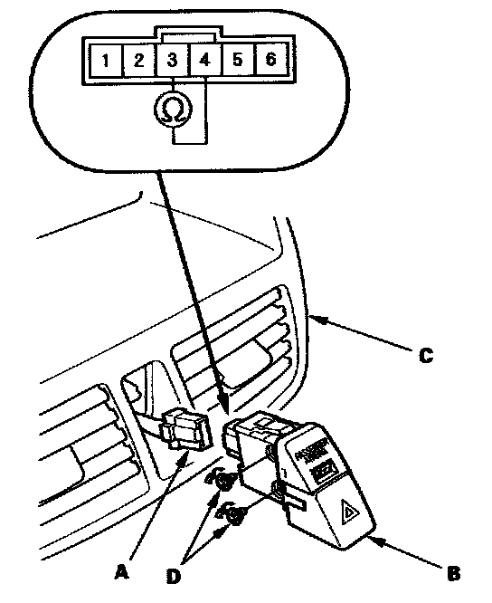

Air Bag Deactivation Indicator: Testing and Inspection
Passenger's Airbag Cutoff Indicator Illumination Bulb Test1. Remove the dashboard center panel.

2. Disconnect the 6P connector (A) from the passenger's airbag cutoff indicator (B).
3. Push out the passenger's airbag cutoff indicator from behind the center panel (C).
4. Check for continuity between the No. 3 and No. 4 terminals of the indicator. If there is no continuity, replace the bulbs (D).
NOTE: Both illumination bulbs are connected in parallel. If there is continuity, remove the lower, hazard switch illumination bulb, and recheck for continuity. If there is no continuity, replace the upper, passenger's airbag cutoff indicator illumination bulb.
5. Reinstall the parts in the reverse order of removal.